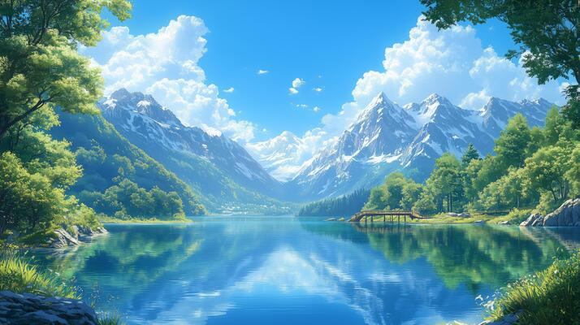
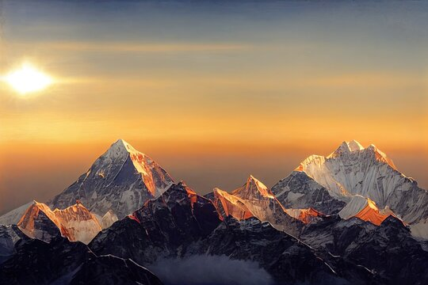
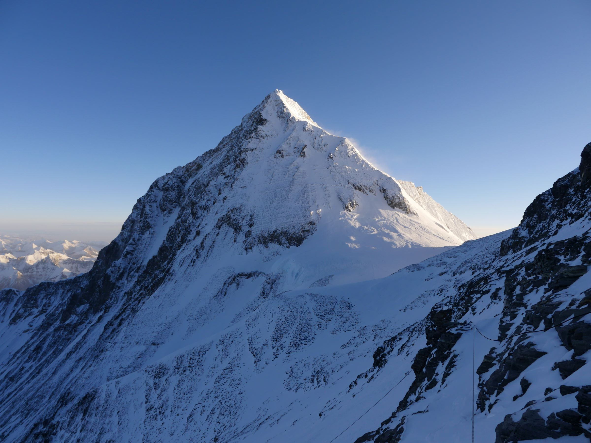
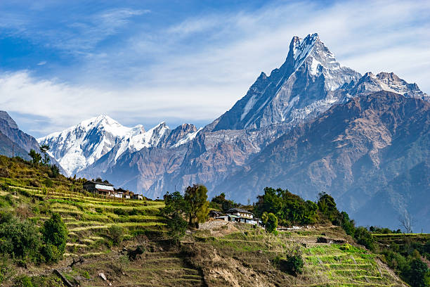
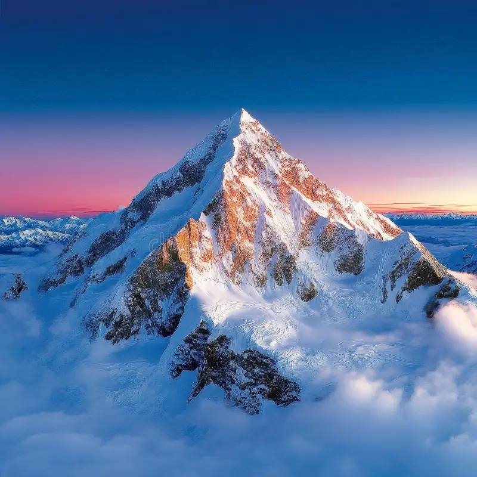
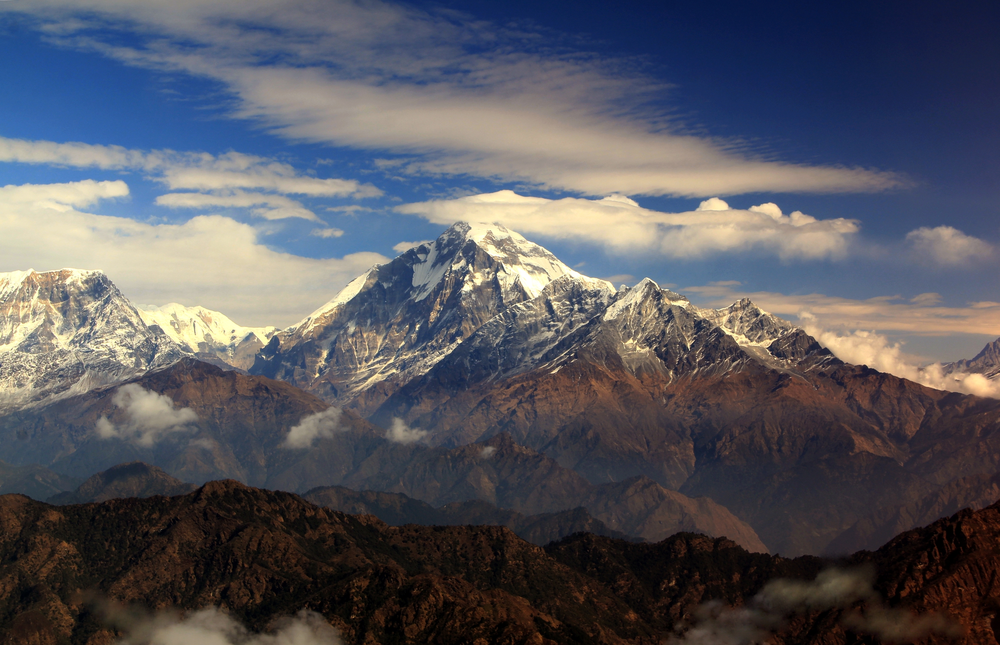
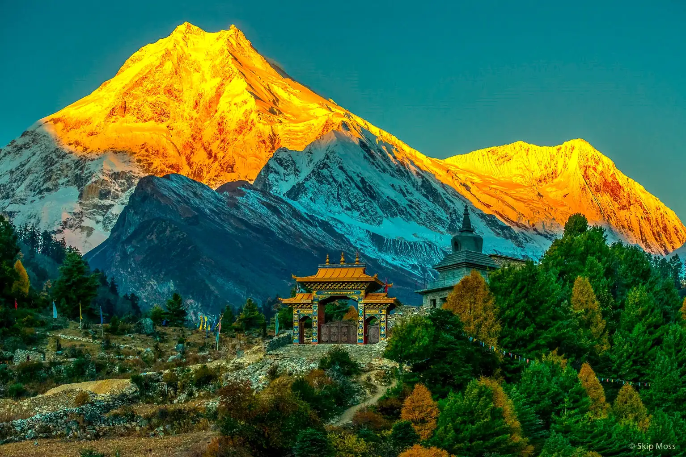
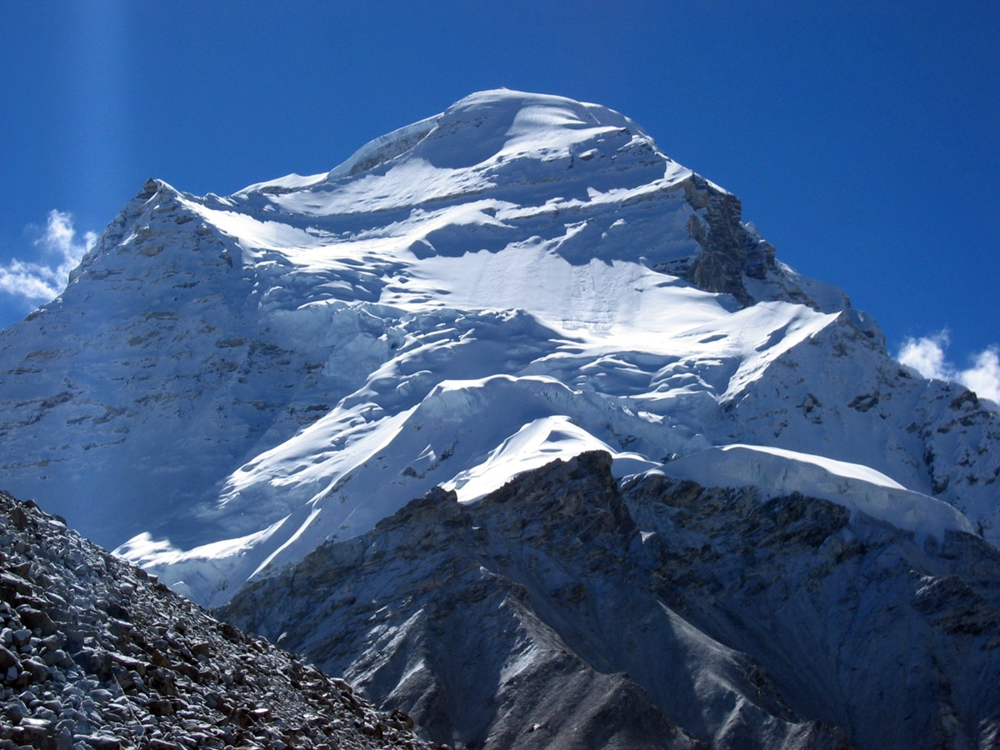

Famous Mountains of Nepal
Explore the majestic peaks of the Himalayas. Click Next to start your journey.

Explore the majestic peaks of the Himalayas. Click Next to start your journey.

Mount Everest, locally known as Sagarmatha (Nepali) , is the world’s highest mountain at 8,848.86 meters. It is located in the Mahalangur Himal sub-range of the Himalayas. Popular trekking routes include the Everest Base Camp trek and the Gokyo Lakes trail. Everest offers breathtaking glaciers, panoramic views, and a challenging climb for mountaineers.

Lhotse, the 4th highest mountain in the world at 8,516 meters, lies immediately south of Mount Everest. Known for its dramatic South Face, Lhotse is part of the Everest massif and is often included in trekking itineraries. Trekkers enjoy stunning views from Kala Patthar and nearby base camps.

The Annapurna Massif includes several peaks above 7,000 meters, with Annapurna I standing at 8,091 meters. The Annapurna Circuit trek is famous for its cultural diversity, terraced landscapes, and natural beauty. This region offers rich biodiversity, high mountain passes, and glimpses of traditional Gurung and Thakali villages.

Makalu, 8,485 meters high, is the 5th highest peak in the world. It has a distinctive pyramid shape and is located 19 km southeast of Everest. The region is remote and less crowded, offering adventure trekkers a challenging experience along with untouched Himalayan landscapes and rich flora and fauna.

Kanchenjunga, at 8,586 meters, is the third highest mountain in the world, straddling the Nepal-India border. Known for its five summits, Kanchenjunga offers spectacular scenery with deep valleys and glacial landscapes. The Kanchenjunga trek showcases the region’s natural beauty and rich biodiversity.

Dhaulagiri, the 7th highest mountain at 8,167 meters, is famous for its striking white peaks and challenging climbing routes. The Dhaulagiri region offers remote trekking experiences with panoramic views and rich biodiversity.

Manaslu, at 8,163 meters, is the eighth highest mountain in the world. Known as the "Mountain of the Spirit," it offers beautiful trekking trails, including the Manaslu Circuit, which is less crowded than Annapurna or Everest regions.

Cho Oyu, 8,188 meters, is the sixth highest mountain globally. Located on the Nepal-Tibet border, it is known for being one of the easiest 8,000-meter peaks to climb. The surrounding landscapes include beautiful valleys, glaciers, and traditional villages.